Test a tool the model must choose
On this page
Back to implementation studies · Download the editable study


Keep the task and its grader fixed while you compare two tool contracts. Use the trace to explain why a design succeeds or fails. A tool can work when called by hand and still cause an agent to pick the wrong argument.
Start offline
Work the case below before you inspect the original source. The
trace, exercise and worked answers are complete offline. The local briefing tool
gives you a related trace. Compare the arguments to
execute_tool with its bounded result and continuation
offset. The optional upstream links at the end need an internet
connection.
Work a result by hand
The fixture has four synthetic repair records.
| ID | Machine | Time | Status |
|---|---|---|---|
| R17 | P2 | 09:00 | open |
| R18 | P2 | 11:00 | closed |
| R19 | P1 | 11:30 | open |
| R20 | P2 | 12:00 | open |
Ask which open repair has the latest timestamp for P2. The expected output ID is R20. The baseline tool provides a full list in pages of two. The agent first receives R17 and R18 plus a cursor. It must follow that cursor and compare R17 with R20. If it stops early, the answer is R17. Label the failure as incomplete retrieval. The grader accepts only the ID R20 after it extracts the answer field.
For the revised tool, pass the machine and requested status to
find_repairs. Return relevant IDs and times, plus a flag
that says whether more records exist. A two-row reply suffices for this
fixture. Compare the result IDs with your own filter on the fixture.
Record the number of returned rows and whether the caller followed a
cursor.
Keep the request and fixture the same. Write a table with one row per
attempt. Include contract_version, task,
expected_id, actual_id, calls,
errors and result_rows. An attempt with two
successful calls and a wrong ID has a response failure. An attempt that
finds R20 after two calls has a passing outcome. Both traces can reveal
avoidable steps.
Make an attractive mistake
Consider a narrower tool that returns the most recent record and no record status. It returns R20 on the first fixture and appears better. Add R21 at 12:15 with status closed. The latest record changes. The expected answer remains R20. Preserve this as a regression case.
A test can also punish valid alternatives. If the answer slot accepts a sentence, exact text comparison may fail a correct result. Define the answer slot as a record ID or parse that field from a structured reply. Grade the ID. Keep call count and result size as diagnostic measures.
Adapt the contract
Add the three tasks “latest open repair for P2,” “latest repair for P2,” and “all open repairs for P1.” Add a fixture with no matching rows. Add a fixture where two records share a timestamp. Specify a tie-break rule in the task or accept both correct IDs.
Run both contracts over your fixtures with a stub caller. Keep the fixture store and grader fixed. Record any change in schema, help text, cursor policy or return fields. Add an unknown tool name and verify that the fixed dispatcher returns a controlled error.
Check your solution
The fixture with R21 distinguishes open repair from most recent repair. A valid multi-call path earns credit. A result must carry a completion flag or cursor when more rows can change the answer. The grader recognizes the empty result. Each requested call has a result with the same ID. The trace supports a factual explanation of every failure.
Retrieve from memory
- What connects a tool result to the call that requested it?
- How can a smaller response reduce load and still make the task harder?
- Which fixture exposes a tool that forgot the status filter?
Show worked answers
- The result carries the tool-use ID from the request block.
- The shorter reply may omit status or pagination. Either can change which record answers the task.
- Add R21 with a later timestamp and closed status. The latest open repair remains R20.
Optional source inspection
Read Anthropic's Writing
effective tools for agents at “Generating evaluation tasks,”
“Analyzing results” and “Optimizing tool responses for token
efficiency.” Open the tool
evaluation notebook. Search for agent_loop,
_prepare_tool_result, evaluate_single_task and
run_evaluation. Use the rendered
cookbook if the notebook viewer hides a code cell. The main URL was
read on 2026-11-20.
Trace a single assistant turn through the code.
agent_loop records the assistant blocks, then creates a
result for each tool-use ID. It sends those results in one message and
records call counts and durations. evaluate_single_task
extracts the final response field and grades exact equality. The
notebook includes a dynamic evaluation example for dispatch. Use a fixed
map of tool names to local functions in your adaptation. Put call and
output limits around your loop.